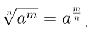

A radiciação foi criada por matemáticos árabes. Eles acreditavam que todo o número tinha crescido de uma raiz quadrada, onde era preciso então, extrair a raiz. Por exemplo o número 16, ao extrair a raiz era sabido que cada lado mede 4. Sendo assim, transpondo para o entendimento atual, a radiciação é uma operação realizada para saber qual é o número que multiplicado por ele mesmo determinada quantidade de vezes, dá o número que conhecemos.
O símbolo utilizado para representar a operação de radiciação é o √(N&I). Sendo que, o N (índice do radical) indica o número de vezes que o número desejado será multiplicado por ele mesmo, e o I será o resultado dessa multiplicação. é o importante ressaltar que quando não há nada no índice do radical, essa operação será uma raiz quadrada, ou seja, o índice será dois.
Para achar a raiz de um número maior, é mais fácil fazer a decomposição em
fatores primos. Por exemplo:
∛729= 729/3
243/3
81/3
27/3
9/3
3/3 =1
Como é uma raiz cúbica, todos esses números “3” virarão dois conjuntos representados pelo número 3, que serão utilizados para fazer a operação “3.3 = 9”, ou seja, a raiz cúbica de 729 é 9, pois 9.9.9 = 729.
Propriedade 1: A raiz em que o expoente do radicando é igual ao índice.
Nesta propriedade, quando o índice for igual ao expoente do radicando, o
resultado é a própria base.
Exemplo:
Propriedade 2: potência de expoente radical.
Aqui, o numerador da fração será o expoente do radicando, e o denominador será o
índice da raiz.
Exemplo:
Propriedade 3: produto de raízes de índices iguais.
Você deverá multiplicar o radicando das duas operações.
Exemplo:
Propriedade 4: quociente de raízes de índices iguais.
Essa propriedade afirma que a divisão de duas raízes, é o mesmo que a raiz de mesmo índice da divisão dos
dois quocientes.
Propriedade 5: potência de uma raiz
Aqui, o resultado da raiz elevada a um expoente, é o mesmo que a raiz do radicando elevada ao expoente.
Exemplos:
Propriedade 6: raiz de outra raiz
Aqui, basta manter o radicando e multiplicar os índices.

Propriedade 7: simplificação de raízes.
Todo radical pode ser escrito na forma de potência com expoente fracionário, exemplo:
